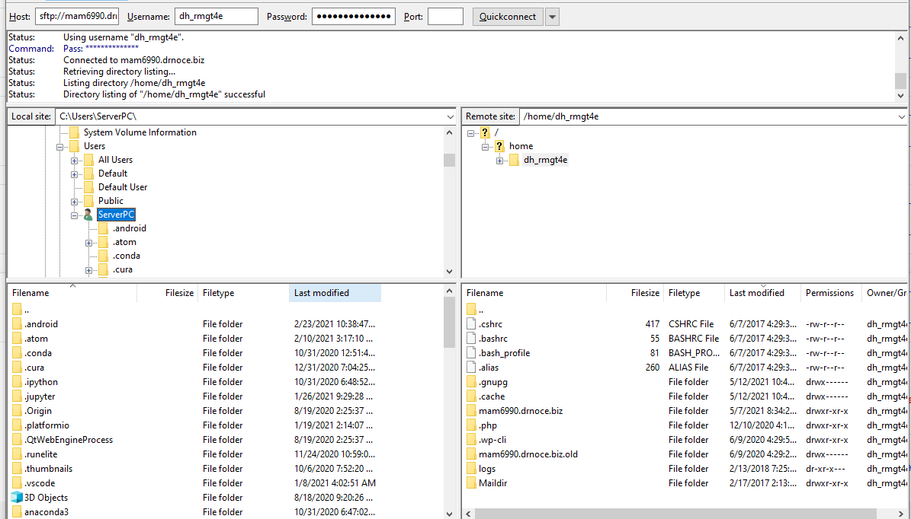
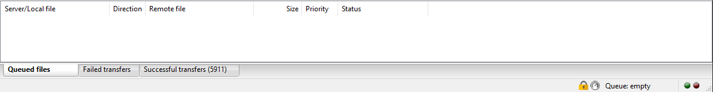
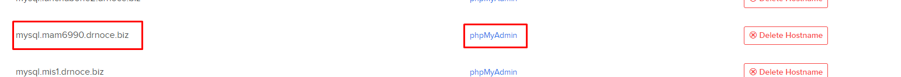
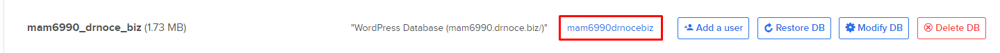
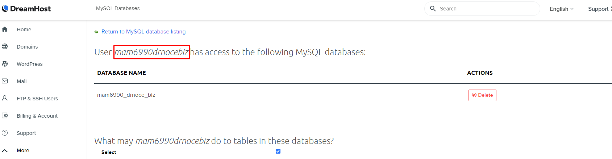
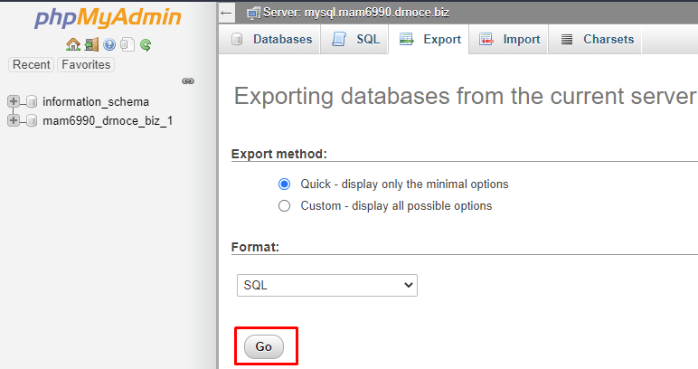

Updated May 15, 2021.
The default version of All-In-One WP Migration has an import limit of 512mb. Partnership Erie has a modified program that allows for larger file sizes to be uploaded.
Note: It is not required to backup FTP/SFTP before SQL. Both will backup fine regardless of the order.


You can use DreamHost's "Manage Files" button in the top right of the FTP/SFTP user or an external FTP client. I reccomend using Filezilla as it is often faster and more reliable than browser transfers.
You can download Filezilla from their website here
The left side is your local directory/PC.
For reference, the basic WordPress installation used in this example transfered 5,911 files in total.
This method uses DreamHost's internal website and phpMyAdmin platform to access and export MySQL databases. - Reference
MySQL databases can also be backed up via SSH - Reference
Backing up the SQL will require a similar process as FTP.

Additionally, middle click or right click "phpMyAdmin" and open it as a new window or tab. We will use this page to log in to the database.
Then click the item in third column, usually YourDomaindrnocebiz or something similar. This text is blue and links to another page. Click on that text.
At the top of the page, you will see the header: "User XXXXX has access to the following ....". Copy word/phrase after user aside for later use.
This is the same text that was clicked on in the previous step.
This is your MySQL Database username.

In cases of extra scripting, database magic, or excess database information (such as eCommerce, forums, etc), a "Custom" export may be required.
See additional information on phpMyAdmin's Docs here
Once Quick or Custom options are selected, click the "Go" button
